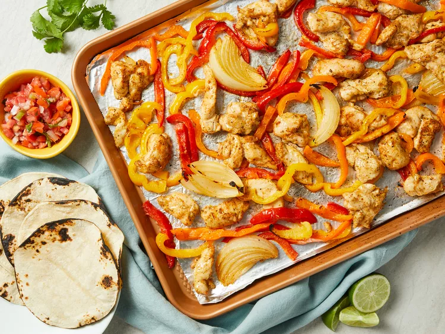

Sheet Pan Chicken Fajitas

This sheet pan chicken fajitas recipe is quick, easy, and a great way to make flavorful homemade fajitas for a crowd.
Ingredients:
- ⅓ cup vegetable oil
- 2 teaspoons chili powder
- 1 teaspoon dried oregano
- ½ teaspoon garlic powder
- ½ teaspoon onion powder
- ½ teaspoon ground cumin
- ½ teaspoon salt
- ¼ teaspoon ground black pepper
- 1 pinch ground cayenne pepper
- 1 ½ pounds chicken tenders, quartered
- 4 cups sliced bell peppers, any color
- 1 onion, sliced
- ¼ cup chopped fresh cilantro
- ½ lime, juiced
Steps
- Combine oil, chili powder, oregano, garlic powder, onion powder, cumin, salt, black pepper, and cayenne pepper in a large resealable plastic bag. Add chicken tenders, bell peppers, and onion; seal the bag and shake to mix. Marinate in the refrigerator, 30 minutes to 2 hours.
- Preheat the oven to 400 degrees F (200 degrees C). Line a rimmed sheet pan with aluminum foil.
- Spread chicken mixture onto the prepared pan.
- Roast in the preheated oven, stirring halfway, until chicken is no longer pink and bell peppers are softened, 15 to 20 minutes. An instant-read thermometer inserted into the center of chicken should read at least 165 degrees F (74 degrees C).
- Sprinkle cilantro and pour lime juice over chicken mixture; stir to distribute.